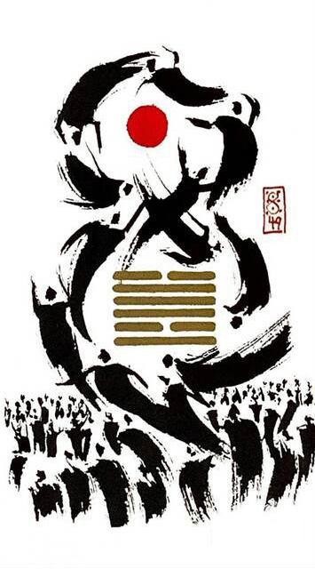

택화혁
평괘 22
택/화 -> 연못의 물이 불을 만나 공기로 끓어오름
8, ∞ : 변혁 ,혁명변혁은 발전의 추동력이다역동적인 에너지의 움직임 180도 바뀌는 상황을 표현한 그림
혁명.변화.혁신하다.바꾸다.변형.급진적변화.옛것을 포기하다.역동적.분주.획기적.과감.적극적
연애운
관계의 새로운 전환점.일때문에 바빠서 데이트 할 시간 부족
사업운
일도 많고 변화도 많은 시기.이직.출장.정신 없음
속마음
주위 카드 보고 리딩! 긍정으로도 부정으로도 리딩 될 수 있다 (주위 카드가 긍정이면 부정으로, 부정이면 긍정으로 기운이 확 바뀜)
썸좋은 변화를 통해 관계를 발전하고 싶은 마음
1년 이상새로운 전환을 통해 변화하고 싶은 마음
이별 후변화를 바라며 새롭게 시작하고 싶은 마음
솔로연애운
주위카드에 따라 달라진다
건강운
급성으로 오는 병.유행 전염병.심장병 주의